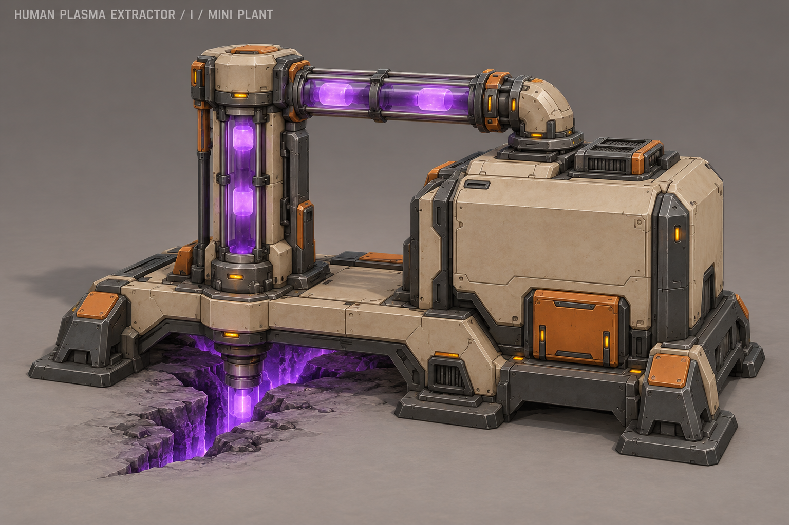

Экстрактор I «Мини-завод» — история
Актуальные шесть вариантов, полностью накрывающих месторождение →
Предложение по уточнению автора. Видимый путь плазмы: разлом → вертикальная колонна → верхний трубопровод → машинный блок.

Для будущей анимации: волна яркости поднимается по колонне и проходит вправо в машинный блок. Это статичный концепт, анимация ещё не создана.
Описание и промпт · Поиск A–H